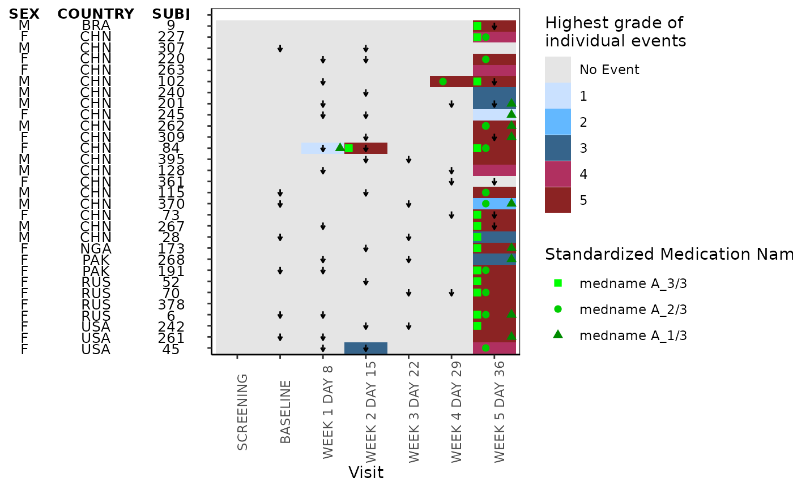
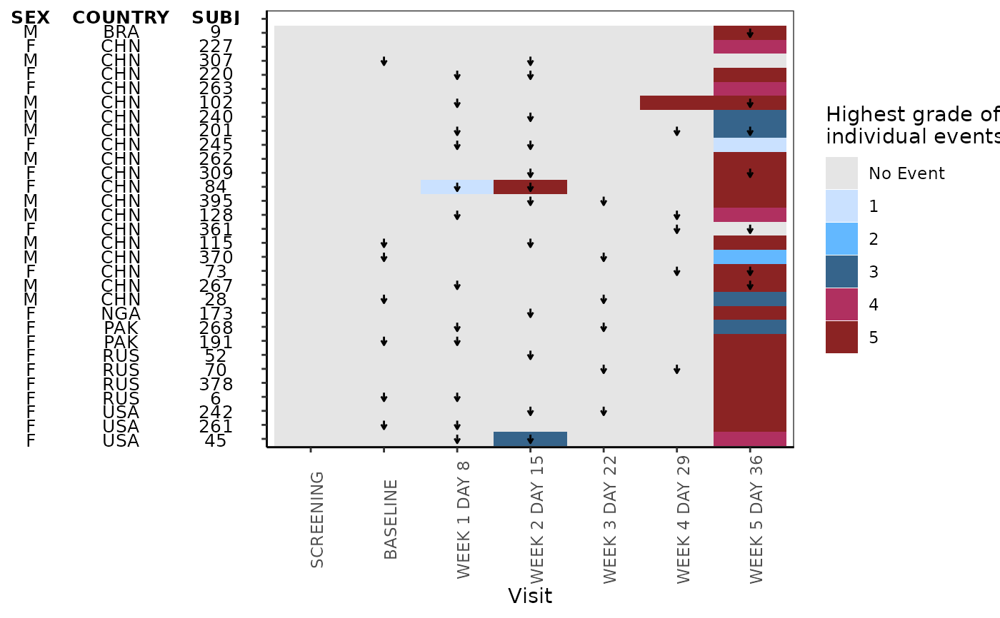

This function plots heatmap
Usage
g_heat_bygrade(
id_var,
exp_data,
visit_var,
ongo_var,
anno_data,
anno_var,
heat_data,
heat_color_var,
heat_color_opt = NULL,
conmed_data = NULL,
conmed_var = NULL,
conmed_color_opt = NULL,
xlab = "Visit",
title = NULL
)Arguments
- id_var
(
character)
name of the column that contains the unique subject identifier shared by all data Usually it is"USUBJID".- exp_data
(
data.frame)
exposure data. Usually it isADEX.- visit_var
(
character)
name of the column that contains the analysis visit. Usually it is"AVISIT"- ongo_var
(
character)
name of the column inexp_datathat contains the logical variable indicating whether the treatment is still ongoing. Usually it can be derived fromEOSSTT- anno_data
(
data.frame)
annotation data that contains subject level characteristics. Usually it isADSL- anno_var
(
character) a vector of columns name(s) to include for the annotation- heat_data
(
data.frame)
data frame that contains the information needed for the text over heatmap Usually it isADCM.- heat_color_var
(
character)
name of the column that contains the heat grade- heat_color_opt
optional, (
character)
a named vector that maps the names to heat colors- conmed_data
optional, (
data.frame)
concomitant medicine data. Usually it isADCMdefault isNULL(noconmedplotted)- conmed_var
optional, (
character)
concomitant medicine variable name. Must be a column name inconmed_datawhenconmed_datais provided. default isNULL(noconmedplotted)- conmed_color_opt
optional, (
character)
vector of color name(s) toconmed_data- xlab
optional, (
character)
string to be shown as x-axis label, default is"Visit"- title
(
character)
string to be shown as title of the plot. default isNULL(no plot title is displayed)
Examples
library(dplyr)
ADSL <- osprey::rADSL %>% slice(1:30)
ADEX <- osprey::rADEX %>% filter(USUBJID %in% ADSL$USUBJID)
ADAE <- osprey::rADAE %>% filter(USUBJID %in% ADSL$USUBJID)
ADCM <- osprey::rADCM %>% filter(USUBJID %in% ADSL$USUBJID)
# function to derive AVISIT from ADEX
add_visit <- function(data_need_visit) {
visit_dates <- ADEX %>%
filter(PARAMCD == "DOSE") %>%
distinct(USUBJID, AVISIT, ASTDTM) %>%
group_by(USUBJID) %>%
arrange(ASTDTM) %>%
mutate(next_vis = lead(ASTDTM), is_last = ifelse(is.na(next_vis), TRUE, FALSE)) %>%
rename(this_vis = ASTDTM)
data_visit <- data_need_visit %>%
select(USUBJID, ASTDTM) %>%
left_join(visit_dates, by = "USUBJID") %>%
filter(ASTDTM > this_vis & (ASTDTM < next_vis | is_last == TRUE)) %>%
left_join(data_need_visit)
return(data_visit)
}
# add AVISIT in ADAE and ADCM
ADAE <- add_visit(ADAE)
#> Warning: Detected an unexpected many-to-many relationship between `x` and `y`.
#> ℹ Row 1 of `x` matches multiple rows in `y`.
#> ℹ Row 56 of `y` matches multiple rows in `x`.
#> ℹ If a many-to-many relationship is expected, set `relationship =
#> "many-to-many"` to silence this warning.
#> Joining with `by = join_by(USUBJID, ASTDTM)`
ADCM <- add_visit(ADCM)
#> Warning: Detected an unexpected many-to-many relationship between `x` and `y`.
#> ℹ Row 1 of `x` matches multiple rows in `y`.
#> ℹ Row 56 of `y` matches multiple rows in `x`.
#> ℹ If a many-to-many relationship is expected, set `relationship =
#> "many-to-many"` to silence this warning.
#> Joining with `by = join_by(USUBJID, ASTDTM)`
#> Warning: Detected an unexpected many-to-many relationship between `x` and `y`.
#> ℹ Row 1 of `x` matches multiple rows in `y`.
#> ℹ Row 1 of `y` matches multiple rows in `x`.
#> ℹ If a many-to-many relationship is expected, set `relationship =
#> "many-to-many"` to silence this warning.
exp_data <- ADEX %>%
filter(PARCAT1 == "INDIVIDUAL") %>%
group_by(USUBJID) %>%
# create a shorter subject identifier
mutate(SUBJ = utils::tail(strsplit(USUBJID, "-")[[1]], n = 1)) %>%
mutate(ongo_var = (EOSSTT == "ONGOING")) %>%
ungroup()
anno_data <- ADSL %>%
select(SEX, COUNTRY, USUBJID) %>%
group_by(USUBJID) %>%
mutate(SUBJ = utils::tail(strsplit(USUBJID, "-")[[1]], n = 1)) %>%
ungroup() %>%
select(-USUBJID)
heat_data <- ADAE %>%
select(USUBJID, AVISIT, AETOXGR) %>%
group_by(USUBJID) %>%
mutate(SUBJ = utils::tail(strsplit(USUBJID, "-")[[1]], n = 1)) %>%
ungroup() %>%
select(-USUBJID)
heat_color_opt <- c(
"No Event" = "gray90",
"1" = "lightsteelblue1",
"2" = "steelblue1",
"3" = "steelblue4",
"4" = "maroon",
"5" = "brown4"
)
cmdecod_label <- attr(ADCM[["CMDECOD"]], "label")
ADCM <- ADCM %>%
filter(
CMDECOD == "medname A_1/3" | CMDECOD == "medname A_2/3" | CMDECOD == "medname A_3/3"
) %>%
mutate(CMDECOD = factor(CMDECOD, levels = unique(CMDECOD)))
attr(ADCM[["CMDECOD"]], "label") <- cmdecod_label
conmed_data <- ADCM %>%
group_by(USUBJID) %>%
mutate(SUBJ = utils::tail(strsplit(USUBJID, "-")[[1]], n = 1))
# example plotting conmed
g_heat_bygrade(
id_var = "SUBJ",
exp_data,
visit_var = "AVISIT",
ongo_var = "ongo_var",
anno_data,
anno_var = c("SEX", "COUNTRY"),
heat_data,
heat_color_var = "AETOXGR",
heat_color_opt,
conmed_data,
conmed_var = "CMDECOD",
conmed_color_opt = c("green", "green3", "green4")
)

# example not plotting conmed
g_heat_bygrade(
id_var = "SUBJ",
exp_data,
visit_var = "AVISIT",
ongo_var = "ongo_var",
anno_data,
anno_var = c("SEX", "COUNTRY"),
heat_data,
heat_color_var = "AETOXGR",
heat_color_opt
)
